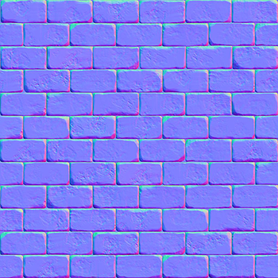
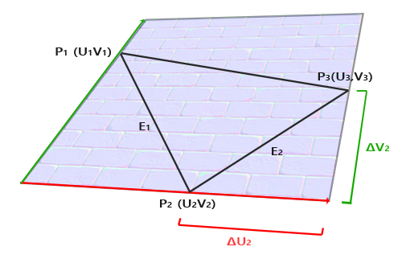
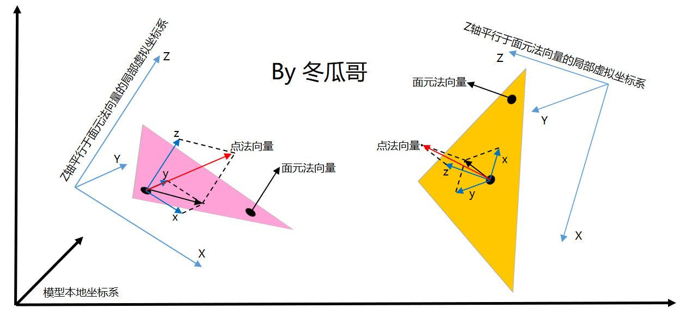
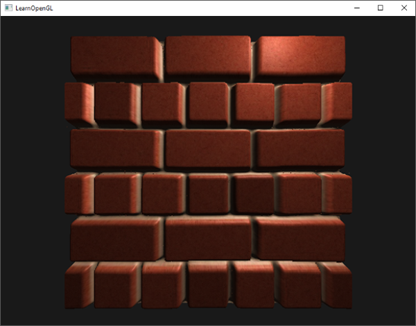
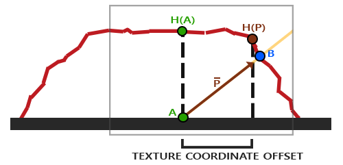
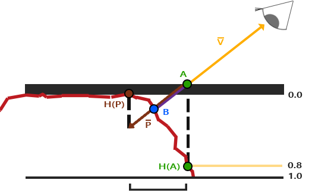
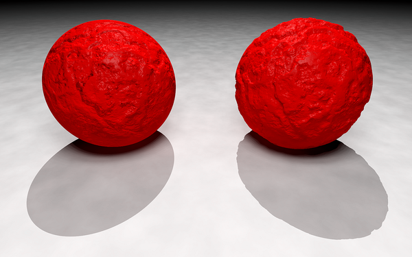
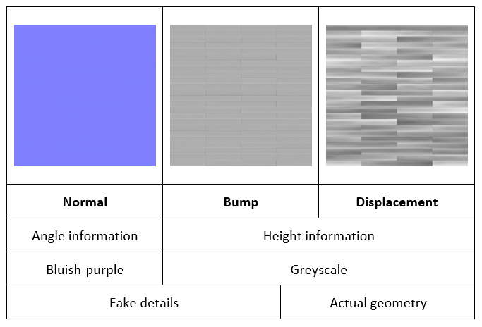
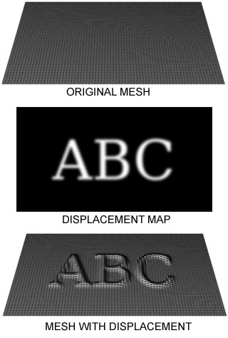

tangent space
- why need tangent space
使得不同朝向的表面可以使用同一个法线贴图。
 - how to solve it
在一个不同的坐标空间中进行光照，这个坐标空间里，法线贴图向量总是指向这个坐标空间的正z方向；所有的光照向量都相对与这个正z方向进行变换。这样我们就能始终使用同样的法线贴图，不管朝向问题。这个坐标空间叫做切线空间（tangent space）。 - uv mapping
3d surface unfolded in a single piece onto a 2D canvas –> keep the number of seams to a minimum
如何生成object的uv是另外一个比较大的topic，以后可以看看
https://www.spiria.com/en/blog/desktop-software/understanding-uv-mapping-and-textures/ - 怎么想的把uv 和 3d的 TBN space 联系到一起的？
每个mesh计算一个TBN空间，存储在顶点 —> 关键点
切线空间是相对于每一个顶点的，也就是说这个法线信息是基于每一个顶点的相对值，可以理解成是一种扰动。

以每个triangle mesh为单位，以mesh的法线变换到tangent space为(0, 0, 1)为目标确定tangent space.

竖轴同样是面法向量，但是有多种不同的x和y轴组合，每种组合生成的点法向量是不一致的，所以需要规定一套固定的x和y轴，大家遵守同样的规则。怎么规定呢？就用纹理的uv坐标来定。具体做法是，取该点所在的三角形的三个顶点P1.P2.P3的纹理U和V坐标，然后x轴的方向就是P3指向P1，又称T轴；y轴方向是P3指向P2，又称B轴。
parallax mapping

key point
根据视线方向扰动纹理坐标(uv)使一个fragment的表面看起来比实际的更高或者更低，所有这些都根据观察方向和高度贴图。
eg.

用B点的纹理坐标代替A点原本的纹理坐标。
？？如何从点A得到点B的纹理坐标
details
- basic realization
1
2
3
4
5
6vec2 ParallaxMapping(vec2 texCoords, vec3 viewDir)
{
float height = texture(depthMap, texCoords).r;
vec3 p = viewDir.xy / viewDir.z * (height * height_scale);
return texCoords - p;
} - better realization
- Steep Parallax Mapping

寻找更加接近的uv offset - Parallax Occlusion Mapping
解决Steep Parallax Mapping的锯齿问题
两个最接近临点的插值
- Steep Parallax Mapping
bump mapping

key point
根据高度扰动法线
details
- basic principle

根据bump map中的height信息计算新的normal - better realization —> normal map
displacement mapping

key point
using a (procedural-) texture- or height map to cause an effect where the actual geometric position of points over the textured surface are displaced, often along the local surface normal, according to the value the texture function evaluates to at each point on the surface.
detail
vertex shader or geometry shader